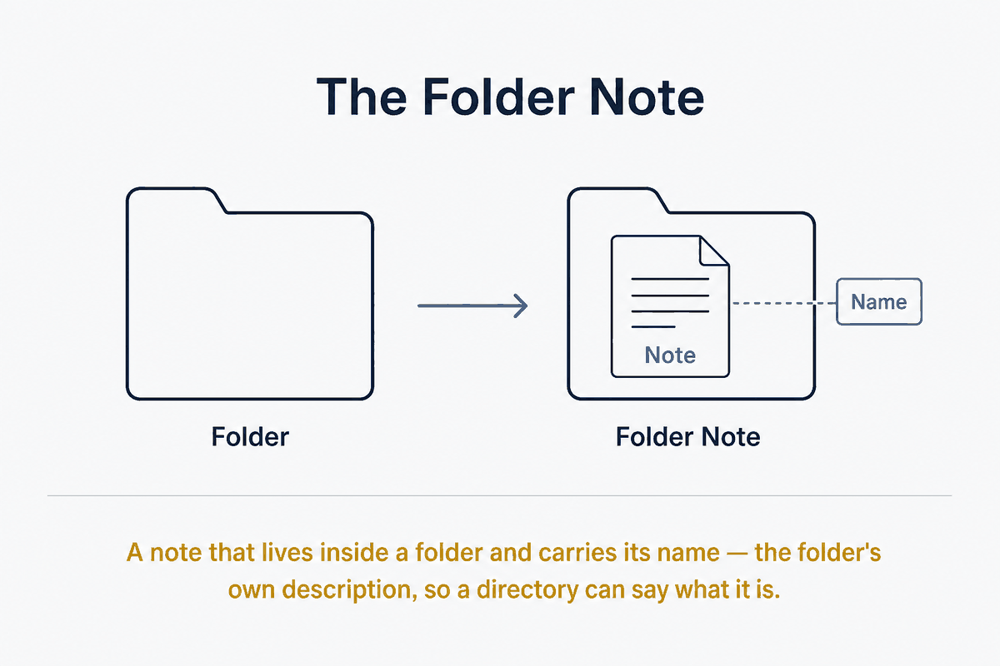

A note that lives inside a folder and carries its name — the folder's own description, so a directory can say what it is.

A Folder Note is a Markdown note that lives inside a folder and shares that folder's name, and whose job is to describe what the folder contains. It is the folder's front page — the note you would write if someone (or something) asked "what is in here, and why?"
It sits at the boundary between two audiences that rarely get served by the same artefact: the human browsing the vault, and the AI agent navigating it. Both need orientation. The Folder Note gives it to them in the same place, in prose, without either having to open and read every file the folder holds.
A folder is a container, but a bare container carries almost no meaning. Its name is a label of a few words; its contents are a flat list of filenames. When a folder holds twenty notes, neither a person nor a model can tell from the outside what the folder is about, what belongs in it, what the notes have in common, or where to look first.
The usual workarounds are weak. Filenames try to carry the meaning and become long and brittle. A folder's purpose lives only in the author's head and drifts as the folder grows. An AI agent asked to work in the vault must open files speculatively, burning context and time to reconstruct an intent that was never written down.
The Folder Note fixes this by making the folder's purpose explicit, addressable, and co-located with what it describes.
The pattern has three parts.
Co-location. The note lives inside the folder it describes, not beside it. Projects/Projects.md describes the Projects folder from within it. This keeps the description travelling with the folder — move the folder, and its front page moves with it.
Name convention. The note's name matches the folder's name (Projects/Projects.md), or uses a fixed sentinel name the whole vault agrees on — most commonly readme (Projects/readme.md), borrowed from the README convention that software repositories have used for decades to mean "read this first to understand this directory." The same-name convention reads more cleanly in a file tree; the readme convention is instantly recognisable to anyone who has touched a codebase and is trivial for tooling to detect. Pick one and hold it vault-wide, because the value comes from the convention being predictable.
Content contract. The note describes the folder: its purpose, what belongs inside it and what does not, how its notes relate to each other, and any entry points worth starting from. It is a map and a charter, not a dumping ground for the folder's actual content.
Obsidian does not natively treat a folder and a note as the same thing — clicking a folder expands it; clicking a note opens it. The Folder Notes community plugin closes that gap. When a folder has an associated note (by matching name, or by a configured sentinel like readme), clicking the folder itself opens and displays that note instead of merely expanding the tree.
The effect is that the folder becomes readable. The folder and its front page collapse into a single click. Browsing the vault stops being "expand a folder, guess from filenames, open a file" and becomes "click a folder, read what it is." The plugin supports both the same-name and the sentinel-name conventions, and can hide the note in the file list so the folder appears to speak for itself.
This is where the pattern earns its place in a systems vault rather than just a tidy one.
An AI agent working over a vault faces the same orientation problem as a human, but pays for it differently. Every file it opens to "figure out what this folder is" consumes context window and adds latency and cost. A vault without Folder Notes forces the agent to explore breadth-first and speculatively, reading content to infer structure.
Folder Notes invert this. The agent reads one small, purpose-built note per folder and learns the folder's intent, scope, and entry points before touching a single content file. Navigation becomes directed rather than exhaustive: the agent descends only into folders whose front page says the answer is likely there, and skips the rest without opening them. The Folder Note is, in effect, a human-readable index that doubles as an AI-readable routing table — one artefact serving retrieval efficiency and human comprehension at once.
The sentinel name helps here too. A model that knows the vault convention is "readme.md describes its folder" can navigate any vault following that rule without being told the layout in advance, exactly as it would reason about a source repository.
The Folder Note is a small instance of a larger systems idea: make structure self-describing. A container that carries its own explanation is navigable by anyone and anything that encounters it, with no external map and no tribal knowledge. The cost is one note per folder and the discipline to keep it current; the return is a vault that explains itself to the two very different readers who need to move through it — the human eye and the machine agent — in the same breath.